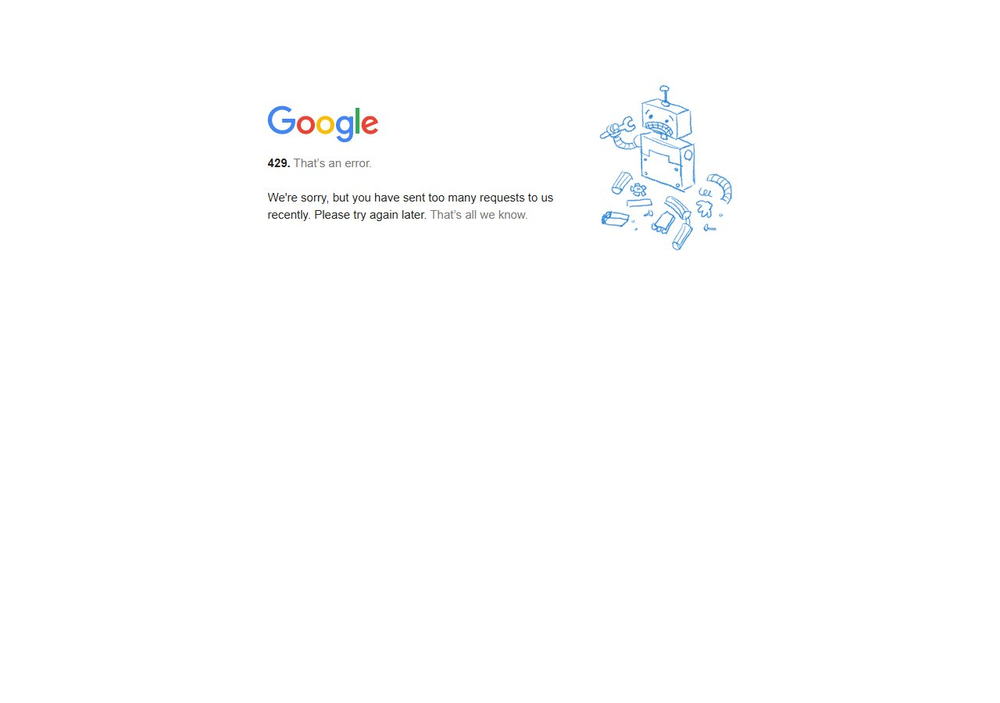

Há sinal de procura e de anúncio, mas venda e tamanho da procura no Reino Unido ainda não foram medidos
A prova de procura vem de anúncio que fica muito tempo no ar e do que as pessoas digitam no Google. O que falta é número de venda e de busca, e este relatório diz isso sem esconder.
01O sinal mais forte
1
lojas anunciando em inglês
15 anúncios no ar
observado · API oficial da Meta
não obtido
soma de alcance por anúncio das lojas locais no Reino Unido
não foi coletado nesta pesquisa: o resumo da API oficial da Biblioteca por país
observado
não obtido
anúncio local mais antigo ainda ativo
não foi coletado nesta pesquisa: o resumo da API oficial da Biblioteca por país
observado
não obtido
anúncios que casam o termo do nicho, em qualquer assunto
sem termo aprovado ou sem contagem para este país
observado
Anúncio que fica mais de 60 dias no ar costuma indicar que quem paga por ele vê retorno. É a leitura do analista inferido, não um dado: a Biblioteca não mostra venda. É o melhor sinal de procura que a pesquisa conseguiu, mas não é prova de venda e não diz quantos pedidos por dia o Reino Unido comporta.
02Frequência de busca e visitas inferido
62
índice de procura no Google Trends no Reino Unido (relativo: só compara países)
fatia do termo "hair growth brush" na busca do país, vezes os usuários de internet
calculado
não obtido
fatia do Reino Unido nas visitas do maior anunciante
o site mais visitado não traz a fatia deste país
observado
não obtido
fatia dos Estados Unidos nas visitas do mesmo site
o site mais visitado não traz a fatia deste país
observado
0
sementes de busca testadas no Reino Unido
autocomplete público do Google
observado
Google Trends UK — 5 anos · ■ hair growth brush ■ scalp massager hair growth ■ LED scalp massager
· Abrir no Trends ↗

Pico em dez/2025 (100): sazonalidade de Natal clara. Tendência de alta desde 2024. Breakouts: red light therapy for hair loss, scalp serum for hair growth.
O que as pessoas digitam no Reino Unido (leitura oficial e leitura comercial)
Limitenão obtidoo autocomplete não foi coletado para este país
Visitas dos sites medidos (SimilarWeb)
não obtidonenhum site com tráfego medido
LimiteO rótulo de visitas da fonte é ambíguo: pode ser o total de três meses ou o do mês (diferença de 3 vezes). Por isso os percentuais valem, mas o número de visitas não é volume mensal. As outras lojas não foram medidas: não obtidoo SimilarWeb gratuito limita as consultas por dia, e as outras lojas ficaram fora da medição.
03Motivadores: por que compra e por que frustra
Por que compra
não obtidosem trecho coletado neste grupo
Por que frustra
não obtidosem trecho coletado neste grupo
O que faz hesitar
não obtidosem trecho coletado neste grupo
O que encanta quem comprou
não obtidosem trecho coletado neste grupo
Limitenão obtidonão foi coletado nesta pesquisa: a voz do mercado (avaliações e comentários)
04Meta por termo, por país
| País | Termo | Intenção | Anúncios que casam (estimativa) | Parte do nicho no teste | Situação |
|---|---|---|---|---|---|
| Reino Unido (en) | hair growth brush | comprar / pesquisar | não obtidotermo sem leitura | não obtidosem anúncios classificados | final |
| Reino Unido (en) | scalp massager hair growth | comprar / pesquisar | não obtidotermo sem leitura | não obtidosem anúncios classificados | fora da lista final |
| Reino Unido (en) | LED scalp massager | pesquisar / comprar | não obtidotermo sem leitura | não obtidosem anúncios classificados | fora da lista final |
| Reino Unido (en) | red light therapy for hair loss | pesquisar / problema | não obtidotermo sem leitura | não obtidosem anúncios classificados | fora da lista final |
| Reino Unido (en) | scalp serum for hair growth | comprar | não obtidotermo sem leitura | não obtidosem anúncios classificados | fora da lista final |
A coluna de anúncios é estimativa da fonte, em qualquer assunto: só a parte "do nicho" interessa. Os totais não se comparam entre países (idioma e termo diferentes) e não se somam. Termo que reprovou no teste de nicho foi trocado. Detalhe por país em Mercados e país.
05Mídia qualificada inferido
1
lojas do nicho anunciando no Reino Unido
1 em inglês
observado · API oficial
15
anúncios ativos somados das lojas do país
estimativa da fonte, não se soma com outros países
observado
não obtido
para os primeiros 1.000 cliques
sem custo do teste para este país
observado
não obtido
conversão média de loja estabelecida
sem referência de conversão
observado
| Camada | O que confirma | O que não permite concluir |
|---|---|---|
| Biblioteca de Anúncios | Há lojas pagando anúncio no assunto, com tempo no ar e alcance (UE). | Quanto gastam, se vendem e se dão lucro. |
| Autocomplete do Google | Mostra o que as pessoas digitam, não a intenção de compra. | O volume de buscas. |
| SimilarWeb | não obtidoo site mais visitado não traz a fatia deste país | Que esse tráfego compra. |
| Google Trends | A fatia do termo na busca de cada país, na mesma escala entre países (série mensal, últimos 12 meses). | Quantas buscas existem; diferença menor que 2 vezes entre países é empate. |
06Voz do mercado
Linguagem que o público do Reino Unido usa
não obtidoa voz do mercado não trouxe vocabulário
Frases do mercado para inspirar texto
não obtidosem frases literais coletadas
Sinais de momento
não obtidoa voz do mercado não registrou sinais de momento
Limites da fonteNão obtido na voz do mercado: não obtidonenhuma lacuna registrada. não obtidoo resto da lista está em Método, limites e auditoria
07Decisão de demanda
Fontede onde veio
API oficial da Biblioteca de Anúncios, autocomplete do Google e SimilarWeb (07/10/2026).observado
Observaçãoo que foi visto
1 lojas em inglês com 15 anúncios; o mais antigo no ar há dias; não obtidoo site mais visitado não traz a fatia deste paísobservado
Interpretaçãoo que isso sugere
Há sinal de procura. Mas nada disso mede venda.inferido
Decisãoo que a régua diz
Portão G1 (Demanda): abriu. Há demanda comprovada no UK em GBP.calculado
Próxima açãoo que fazer agora
Antes de gastar em anúncio, conferir a curva de 5 anos no Google Trends do link acima.recomendado
observado visto na fontecalculado conta declaradainferido leitura do analistarecomendado ação sugeridanão obtido a fonte não entregou, motivo ao lado